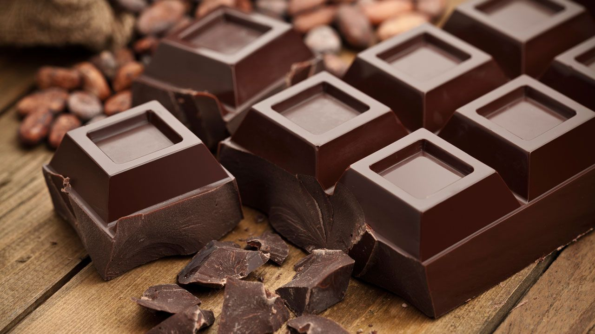

Trabajando por un mundo mejor Nuestro compromiso se extiende a la salud de las personas y del mundo. Usamos ingredientes 100% orgánicos en la elaboración de todos nuestros chocolates. El resultado se siente en su sabor fresco e intenso y en los aromas que nos transportan al origen de todo, a la tierra donde se cultiva el mejor cacao.


El chocolate blanco es un alimento que se elabora con manteca de cacao, azúcar y sólidos de leche . Tiene una apariencia de color amarillo o marfil pálido. Algunos consideran que no es chocolate, porque a pesar de tener un alto contenido de manteca de cacao, no lleva sólidos de cacao .
El chocolate negro contiene triptófano, un aminoácido esencial que el cerebro utiliza para producir serotonina, también conocida como la "hormona de la felicidad". Por otro lado,también es destacable la presencia de feniletilamina, un compuesto orgánico producido en el cerebro cuando nos enamoramos.
